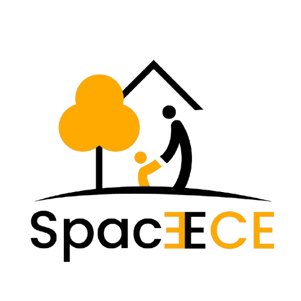

0
Families Engaged

ParenTal ToddlerParental Toddler Program
Empower your child's early development through scientifically-designed activities. Join 2,500+ parents creating nurturing home environments where toddlers aged 1-3 thrive, learn, and grow with confidence and joy.
Families Engaged
Home Activities
Success Rate
156 science-backed activities designed for parents to facilitate at home without special training.
Track and celebrate your toddler's growth across cognitive, motor, and emotional development.
About Parental Toddler Program
The Parental Toddler Program recognizes a fundamental truth: the home is your child's first classroom, and you are their most influential teacher. During ages 1-3, toddlers experience unparalleled brain development, with 90% of neural connections formed. This is the critical window where everyday moments transform into powerful learning opportunities.
Our program empowers parents with scientifically-designed activities using items already in your home. No special training needed. No expensive materials required. Just meaningful interactions that nurture your child's curiosity, build confidence, and lay the foundation for lifelong learning.
Through guided activities across texture exploration, sensory play, cognitive challenges, and motor skill development, you'll discover how sorting household items becomes a mathematics lesson, how bath time becomes a science experiment, and how playtime becomes profound bonding.
Each activity builds systematically on previous milestones. Our curriculum spans ages 1-3, then pre-school and early grades, creating a seamless learning journey where each stage prepares your child for the next.
You already have everything you need. Our program trains parents to recognize learning in everyday moments and facilitates activities that require zero special equipment—just intentionality and presence.
Every activity is grounded in child development research. Designed by early childhood experts and field-tested with thousands of families, our methods deliver measurable developmental gains.
We nurture cognitive, motor, social-emotional, and sensory development simultaneously. Your child grows confident, curious, creative, and connected—ready for any challenge ahead.
Why This Program Matters
Research shows that 90% of brain development happens before age 3. Quality early experiences create stronger neural connections, better emotional regulation, improved language development, and enhanced social skills. Your involvement matters more than any expensive program.
From texture exploration and sensory play to cognitive challenges and gross motor development—all designed for your home, using everyday objects. Activities progress with your child's development across 1-3 years.
Activities that sharpen problem-solving, classification, and early mathematical thinking. Watch your toddler discover that sorting toys by color is a lesson in categorization and logical reasoning.
Fine motor activities (threading, grasping, poking) and gross motor play (climbing, jumping, balancing) that build confidence and physical competence. Your child gains independence and coordination.
Touch different textures, explore sounds, taste safe flavors, smell natural scents. Sensory-rich experiences calm anxiety and boost learning. Your home becomes a multi-sensory learning laboratory.
Narrate activities, expand vocabulary, introduce concepts through play-based conversations. Your toddler's language explodes when learning happens through joyful interaction, not instruction.
The most powerful outcome: deeper parent-child connection. Shared learning moments build secure attachment, trust, and a lifetime love of learning. Your presence is the most valuable teaching tool.
Who Should Join
Wanting to maximize your child's early years and build confident parenting foundations from day one. No prior experience needed—just love and willingness to learn.
Who want quality time with their toddlers. These short, purposeful activities fit into busy schedules and transform ordinary moments into meaningful developmental opportunities.
Anyone spending significant time with a toddler will benefit. Our activities help you engage meaningfully and understand child development while having fun together.
Teachers and daycare providers who want proven, age-appropriate activities to share with families. The program strengthens home-school partnerships and consistency in care.
Building knowledge of early childhood development before pursuing formal certification. This program provides practical foundations and real-world experience with toddlers.
If your child shows developmental delays or you want extra enrichment, our activities target all developmental domains and adapt to individual needs and pace.
Learning Domains
Our 156 activities target six critical domains, with progression that matches your child's age and readiness. Each activity takes 5-15 minutes and uses everyday household items.
Activities: Sorting, matching, object permanence games, cause-and-effect exploration, problem-solving challenges. Your toddler learns to think, reason, and understand the world around them.
Activities: Fine motor (threading, grasping, poking) and gross motor (climbing, jumping, dancing). Builds physical confidence, coordination, and independence in daily tasks.
Activities: Narration, vocabulary building, sound exploration, storytelling. Your toddler's language flourishes when embedded in joyful, interactive play experiences.
Activities: Texture exploration (clay, water, sand), sound discovery, taste-safe flavors, scent exploration. Multi-sensory experiences calm and engage developing brains.
Activities: Emotion naming, empathy building, turn-taking, cooperative play. Strong emotional foundations create resilient, confident, socially-aware children.
Activities: Eating, dressing, hygiene routines guided playfully. Your toddler gains competence, confidence, and independence—essential for school readiness.
Parent Testimonials
Join Us Today
The Parental Toddler Program provides everything you need: 156 scientifically-designed activities, developmental tracking, parent support, and a community of families committed to nurturing their children's growth. Your child's critical window is now—let's make every moment count.